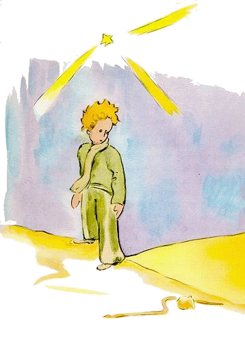

小王子 The Little Prince
第17章
第17章
一个人如果想把话说得有趣些，免不了会稍稍撒点谎。我给你们讲点灯人大军的那会儿，就不是很诚实。那些不了解我们行星的人，听了我讲的故事，可能会造成一种错觉。其实人在地球上只占一点点地方。倘若让地球上的二十亿居民全都挨个儿站着，就像集会时那样，那么二十海里长、二十海里宽的一个广场就容得下他们。全人类可以挤在太平洋中最小的一个岛屿上。
当然，大人是不会相信你们的。他们自以为占了好多好多地方。他们把自己看得跟猴面包树一样重要。你们不妨劝他们好好算一算。他们喜欢数字，说到计算就来劲。不过你们可别浪费时间，去做这种叫人厌烦的事情。根本不用去做。你们相信我就行了。所以小王子一踏上地球，就觉得奇怪，怎么一个人也看不见呢。他正在担心是不是来错了星球，忽然看见沙地上一个月白色的圆环在挪动。
“晚上好，”小王子没把握地招呼说。
“晚上好，”蛇说。
“我落在哪个行星上了？”小王子问。
“在地球上，这是非洲，”蛇回答。
“噢！难道地球上一个人也没有吗？”
“这儿是沙漠。在沙漠上是一个人也没有的。地球大着呢，”蛇说。
小王子在一块石头上坐下，抬头望着天空：
“我在想，”他说，“这些星星闪闪发亮，大概是要让每个人总有一天能找到自己的那颗星星吧。瞧我的那颗星星。它正好在我们头顶上……可是它离得那么远！”
“它很美，”蛇说，“你到这儿来干吗？”
“我和一朵花儿闹了别扭，”小王子说。
“噢！”蛇说。
他俩都沉默了。
“哪儿见得到人呢？”小王子终于又开口了，“在沙漠里真有点孤独……”
“在人群中间，你也会感到孤独，”蛇说。
小王子久久地注视着蛇：
“你真是种奇怪的动物，”最后他说，“细得像根手指……”
“可我比一个国王的手指还厉害呢，”蛇说。
小王子笑了：
“你厉害不到哪儿去……你连脚都没有……要出远门你就不行吧？”
“我可以把你带到很远很远的地方去，比一艘船去的地方还远，”蛇说。
它盘在小王子的脚踝上，像一只金镯子：
“凡是我碰过的人，我都把他们送回老家去，”它又说，“可你这么纯洁，又是从一颗星星那儿来的……”
小王子没有作声。
“在这个花岗石的地球上，你是这么弱小，我很可怜你。哪天你要是想念你的星星了，我可以帮助你。我可以……”
“噢！我明白你的意思，”小王子说，“可为什么你说的话都像谜似的？”
“这些谜我都能解开，”蛇说。
然后他们又都沉默了。